112 年國中教育會考社會試題與答案
這一頁是民國 112 年國中教育會考社會的整份歷屆試題，共 54 題，題目與標準答案出自心測中心 會考歷屆試題（依著作權法 §9，考試試題不受著作權保護），其中 54 題附有詳解。以下逐題列出題幹、選項與答案；要計時作答或記錄成績，請用線上練習。
線上作答這一科 →
全部 54 題
第 1 題
近年來，在政府與民間的努力下，開發出米麵包、米蛋糕、米布丁、米鳳梨酥、米冰淇淋等新米食。上述作法最可能達成下列何項效益？
- （A）降低稻米生產成本
- （B）減少水稻耕作人力
- （C）減輕稻米過剩壓力
- （D）確保米食安全管理
答案：（C）
詳解與考點
正解：米麵包、米蛋糕、米布丁等新米食，是把稻米加工成更多樣的產品以擴大消費需求。需求增加能消耗餘糧，減輕稻米過剩壓力，所以C為正解。
A：食品研發不會直接降低農民種植稻米的生產成本，錯誤。
B：新產品改變的是消費與加工方式，不能直接減少水稻耕作所需人力，錯誤。
D：米食安全管理屬檢驗、衛生與追溯制度範圍，不是開發新產品的主要效益，錯誤。
本題考點：農業多角化經營——將農產品開發成多元加工品，可增加用途與市場需求；要處理產量過剩，判準是設法擴大消費或去化存量。
第 2 題
交通部公路總局為了滿足部分地區民眾就學、就醫及洽公的需求，以及達成某項目的，推動「幸福巴士」政策。圖（一）為 2019 年 8 月時設有營運路線的行政區分布。根據上述及右圖資訊推論，該目的最可能為下列何者？
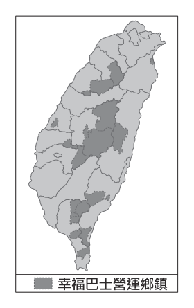
- （A）串連北中南的工業園區
- （B）降低高速公路的車流量
- （C）增加高鐵接駁的便利性
- （D）彌補公共運輸網的不足
答案：（D）
詳解與考點
正解：題幹說幸福巴士要滿足偏遠地區就學、就醫與洽公需求，圖中營運行政區又多在中央山脈、東部及偏遠地區，關鍵是一般客運服務不足。政策目的在彌補公共運輸網的不足，D為正解。
A：圖示分布並非以北中南工業園區為主，且就學、就醫需求也不是串連工業園區的主要目的，錯誤。
B：偏鄉接駁路線不是降低高速公路車流量的主要手段，錯誤。
C：設站區並非集中於高鐵沿線；它看起來對，是因為幸福巴士具有接駁功能，但題幹強調的是偏鄉基本交通需求，錯誤。
本題考點：公共運輸政策——先比對服務對象、需求與空間分布；偏鄉人口稀少、固定客運不足時，彈性或需求導向運輸可補足公共運輸網缺口。
第 3 題
格陵蘭島位處北極圈附近，某研究針對島上居民進行「氣候變遷對人類心理影響」的抽樣調查，結果顯示大部分受訪者曾親身經歷全球暖化對生活帶來的影響，氣候變遷正為北極地區居民帶來前所未有的壓力和焦慮。下列何者最可能為當地居民擔憂的事情？
- （A）日益變薄的冰層讓雪橇通行變得危險
- （B）冰河侵蝕日漸增強導致耕地面積減少
- （C）海中珊瑚大量死亡造成觀光收益下滑
- （D）氣溫逐年變化使得冬天變長夏天變短
答案：（A）
詳解與考點
正解：格陵蘭島位於北極圈附近，全球暖化使冰層日益變薄；當地居民若以狗拉雪橇通行，冰面承載力下降會增加通行危險，A 最符合題幹的生活壓力與焦慮。
B：格陵蘭多為冰凍土與冰原，農耕本已受限；題幹所述暖化的典型北極影響也不是冰河侵蝕導致耕地減少，錯誤。
C：珊瑚礁主要分布在熱帶海域，不是格陵蘭居民最可能面臨的問題，錯誤。
D：暖化通常使夏季較長、冬季較短，與「冬天變長、夏天變短」的方向相反，錯誤。
本題考點：全球暖化的區域影響——要把氣候變遷現象連結到當地緯度、地形與生活方式；北極地區——冰層變薄會直接影響冰上交通安全。
第 4 題
表(一)為中國不同年分的人口普查部分資料。觀察表中幼年人口比例的變動，下列何者最可能是造成 2010 到 2020 年微幅變化的原因之一？
表(一) 單位：%| 年齡組成＼年分 | 1953 | 1964 | 1982 | 1990 | 2000 | 2010 | 2020 |
|---|
| 0-14 歲 | 36.28 | 40.69 | 33.59 | 27.69 | 22.89 | 16.60 | 17.95 |
| 15-64 歲 | 59.31 | 55.75 | 61.50 | 66.74 | 70.15 | 74.53 | 68.55 |
| 65 歲以上 | 4.41 | 3.56 | 4.91 | 5.57 | 6.96 | 8.87 | 13.50 |
- （A）開放生育第二胎
- （B）實施一胎化政策
- （C）重男輕女觀念式微
- （D）嚴格限制人口移入
答案：（A）
詳解與考點
正解：表中0—14歲人口比例由2010年的16.60％微幅回升至2020年的17.95％，關鍵是幼年人口比例回升。中國先在2013年放寬生育限制，並於2016年開放生育第二胎，新增出生人口可使幼年人口比例上升，故 A 為正解。
B：一胎化政策限制出生數，較可能使幼年人口比例下降，與表中回升趨勢不符，錯誤。
C：重男輕女觀念式微主要影響性別觀念，不能直接說明幼年人口比例回升，錯誤。
D：嚴格限制人口移入影響遷移人口，不能直接增加幼年人口的出生比例，錯誤。
本題考點：人口結構判讀——先看比例是上升或下降，再找會直接改變出生數的因素；人口政策影響——放寬生育限制可能增加新生兒，限制生育則可能壓低幼年人口比例。
第 5 題
清末一位知識分子提到：「今日多數的中國婦女終身只待在家中，不曾見過什麼人、沒去過其他城市、身邊沒有學習的夥伴而孤陋寡聞，只能學一些無關緊要的東西，而這些東西遠比不上有用的知識。這是因為現在還有毀壞人體的風俗，這樣的風俗沒有廢除，新式的女子學校就無法設立。這項風俗延續了數百年直到今日，是外國人眼中的笑柄。」上述「風俗」最可能是下列何者？
- （A）自幼纏足
- （B）吸食鴉片
- （C）剃度出家
- （D）薙髮留辮薙髮留辮：剃除大部分頭髮，僅在腦後編成髮辮的滿族髪式。
答案：（A）
詳解與考點
正解：題幹以「毀壞人體」、「阻礙女子學校設立」、「延續數百年」及婦女長期困在家中為線索，指向清末改革者批判的纏足習俗。女子自幼纏足會傷害身體、限制行動與受教育機會，故 A 為正解。
B：吸食鴉片雖危害身體，但不限女性，也不能直接說明女子教育難以設立，錯誤。
C：剃度出家是出家人的宗教行為，非清末普遍限制婦女行動與教育的風俗，錯誤。
D：薙髮留辮是清代的髮式要求，且不限女性，與題幹所述毀壞女子身體、阻礙女子教育不符，錯誤。它看起來對，是因為同為清代受批評的風俗，但題幹特別限定婦女與女子學校。
本題考點：清末社會改革——廢纏足運動批判纏足對女性身體與教育的限制；史料判讀——將「婦女」、「毀壞人體」與「女子教育」等線索合併，才能辨認所指風俗。
第 6 題
表(二)為兩個雜誌社的成員，他們在某時期曾遭法院判刑入獄。隨著時局更迭，2019年政府公告撤銷原本的有罪判決，讓他們獲得平反。表中人員當時被判刑，最可能與下列何者有關？
表(二)| 雜誌社 | 成員 |
|---|
| 自由中國 | 雷震等人 |
| 美麗島 | 黃信介等人 |
- （A）受威爾遜的影響，主張民族自決
- （B）反對皇民化時期推動的統治措施
- （C）挑戰戒嚴時期對人民權利的限制
- （D）聲援六四天安門事件，發動遊行
答案：（C）
詳解與考點
正解：表（二）的《自由中國》雷震與《美麗島》黃信介，關鍵是兩者均因批評時政、爭取民主而遭判刑，後來又獲撤銷判決平反。這反映他們挑戰戒嚴時期對人民權利的限制，C 正確。
A：民族自決是第一次世界大戰後的重要主張，和表中人物及戒嚴時期案件無關，錯誤。
B：皇民化是日治末期的統治措施，表中《自由中國》與《美麗島》所處時代不符，錯誤。
D：六四天安門事件發生於1989年，並非表中人員當時被判刑的共同原因，錯誤。
本題考點：戒嚴時期的人權限制——由人物、刊物與平反線索判斷歷史背景；轉型正義中的撤銷有罪判決，是回應過去不當政治迫害的作法。
第 7 題
圖(二)是法國1750至2000年人民平均壽命曲線圖。下列何者最能合理解釋圖中甲、乙、丙、丁四個箭頭處，平均壽命變動的主要原因？
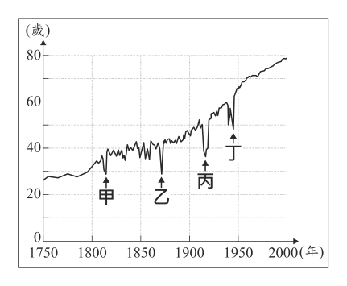
- （A）宗教改革後，教派間對立引發流血衝突
- （B）派遣移民前往殖民地，使國內人口減少
- （C）參與對外戰爭，造成青壯年人口減損
- （D）「經濟大恐慌」蔓延，社會嚴重失序
答案：（C）
詳解與考點
正解：題幹圖中甲、乙、丙、丁都指向平均壽命明顯下跌處，關鍵是多次短期驟降的共同原因。這些時段可對應拿破崙戰爭、普法戰爭、第一次世界大戰與第二次世界大戰；戰爭造成青壯年傷亡，會拉低平均壽命，C 正確。
A：宗教改革後的教派衝突主要在更早的時期，不能解釋四個不同年代的下跌，錯誤。
B：派遣移民會改變人口數量，未必造成平均壽命在箭頭處同步驟降，錯誤。
D：經濟大恐慌是特定時期的經濟危機，無法解釋四處變動，錯誤。它看起來對，是因為社會失序可能影響生活，但不具反覆對應戰爭年代的解釋力。
本題考點：歷史圖表判讀——先找曲線共同的變動型態，再比對年代事件；戰爭大量傷亡會使人口平均壽命短期下降。
第 8 題
李科羅是一位天主教傳教士，1655年前往廈門傳教，並得到當地統治者「國姓爺」的關照；他也為國姓爺父子擔任使者，出使菲律賓。但1663年李科羅結束使者任務返回廈門時，卻遭當地的新統治者逮捕；他擔心被送往北京，因此在洪水氾濫期間，趁亂逃亡，最後輾轉逃到臺灣。李科羅逃亡的原因，最可能與下列何者有關？
- （A）日本與荷蘭互相合作
- （B）荷蘭與西班牙互相敵對
- （C）鄭氏政權與英國互相合作
- （D）清帝國與鄭氏政權互相敵對
答案：（D）
詳解與考點
正解：題幹的「國姓爺」指鄭成功；李科羅曾為鄭成功父子效力，1663年鄭氏勢力撤出廈門後，當地由清帝國控制。他因與鄭氏有關聯而遭逮捕、擔心被送往北京，反映清帝國與鄭氏政權敵對，故 D 為正解。
A：日本與荷蘭的關係不能解釋清軍逮捕曾為鄭氏服務的李科羅，錯誤。
B：荷蘭與西班牙的敵對也與廈門政權易手及李科羅被捕無關，錯誤。
C：題幹沒有英國，且鄭氏政權與英國合作不能說明清方逮捕李科羅，錯誤。
本題考點：明鄭與清初局勢——「國姓爺」是鄭成功，鄭氏與清帝國對立；史料情境判讀——先由人物效忠關係與政權更替，推論被逮捕的政治原因。
第 9 題
我國國民在面對新冠肺炎疫情時，可透過接種疫苗來降低染疫風險，但逾期停留或逾期居留的外國人卻無法接種疫苗，一旦染疫後，可能也無法得到適當的醫療服務，甚至危及他們的生命安全，因此有民間團體呼籲政府應將這些人納入公費疫苗施打對象。後來，政府基於防疫需求與風險控管，在國內疫苗供應充足的情況下，以專案方式為這些人施打疫苗。上述民間團體的呼籲隱含下列哪一觀點？
- （A）公民參政權應受到重視
- （B）政府應得到人民定期授權
- （C）基本人權應受到普遍性保障
- （D）國家權力應受制衡以免遭濫用
答案：（C）
詳解與考點
正解：民間團體主張逾期停留或居留的外國人也應能接種疫苗、獲得醫療服務，關鍵是生命與健康不應因國籍而被排除。這是基本人權的普遍性保障，C 正確。
A：公民參政權是選舉、罷免、創制、複決等政治參與權利，和疫苗及醫療服務無關，錯誤。
B：人民定期授權政府是民主政治的選舉原理，非本題所論，錯誤。
D：權力制衡在防止國家權力濫用，題幹並非討論政府機關間的相互監督，錯誤。它看起來對，是因為題幹提到政府決策，但核心是受保障者的基本權利。
本題考點：基本人權的普遍性——生命、健康等基本權利應不分國籍受到保障；判斷時區分個人基本權利、參政權與權力制衡。
第 10 題
圖（三）為某島國周邊範圍的示意圖，甲區塊為該國的土地，乙、丙區塊為環繞在甲周圍的海域，而丁、戊、己區塊則分別為甲、乙、丙所對應大氣層內的空中領域。根據圖中內容判斷，該國完整的領土範圍應為下列何者？
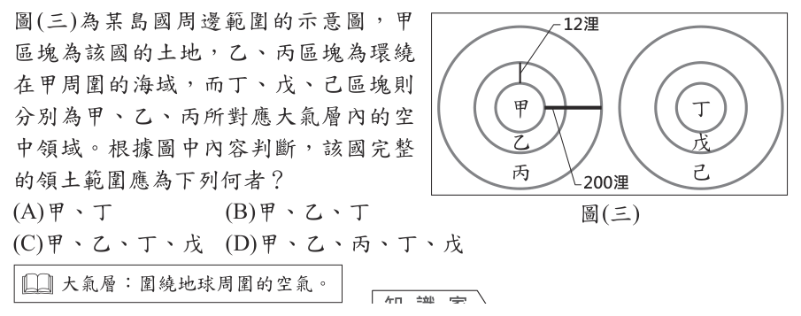
- （A）甲、丁
- （B）甲、乙、丁
- （C）甲、乙、丁、戊
- （D）甲、乙、丙、丁、戊
答案：（C）
詳解與考點
正解：完整領土包括領陸、領海與其上空的領空。圖中甲是領陸、乙是12浬領海，丁與戊分別是甲、乙上空的領空，因此甲、乙、丁、戊都屬領土，C為正解。
A：只含甲、丁，漏掉領海乙及其上空戊，錯誤。
B：含甲、乙、丁卻漏掉領海上空的戊，錯誤。
D：把丙與己納入；丙為12至200浬的專屬經濟區、己為其上空，國家僅有經濟管轄權，不屬完整領土，錯誤。
本題考點：領土構成——領土＝領陸＋領海＋領空；專屬經濟區可行使特定經濟權利，但不能與領海、領空混為一談。
第 11 題
圖（四）是小強在網路上張貼的問題及四位網友的回答，根據圖中內容判斷，下列何者的回答可以給小強適當的協助？
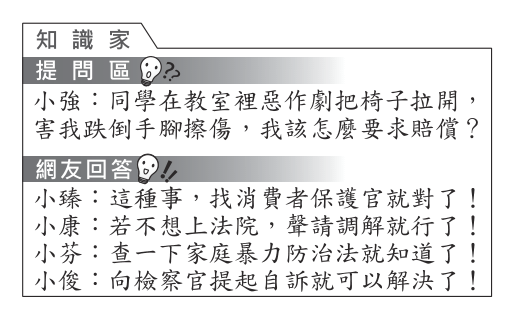
- （A）小臻
- （B）小康
- （C）小芬
- （D）小俊
答案：（B）
詳解與考點
正解：惡作劇使人受傷，受害者可請求損害賠償，屬民事侵權問題；若不願上法院，可向鄉鎮市調解委員會聲請調解。小康的回答符合這條救濟途徑，B為正解。
A：消保官處理消費爭議，本題並非消費者與業者間的糾紛，錯誤。
C：家暴防治法適用家庭成員間的暴力問題，與同學惡作劇情境不符，錯誤。
D：自訴屬刑事程序，不是題幹中不想上法院而尋求民事賠償的適當協助；它看起來對，是因為受傷可能涉及違法，但應先依問題性質選救濟途徑，錯誤。
本題考點：民事紛爭救濟——先依當事人關係與損害性質區分民事、刑事或行政問題；民事侵權求償若希望庭外解決，可聲請鄉鎮市調解委員會調解。
第 12 題
某日，小晴沒來上課，班上同學們問了老師才知道，因為小晴是太魯閣族的原住民，所以他今天放假和家人一起返回部落參與感恩祭。老師也藉機以圖( 五)中的法律規範，向同學們說明小晴可以放假的依據。根據上述內容判斷，主管機關將原住民族的傳統祭儀納入法律規範的原因，其主要考量最可能是下列何者？
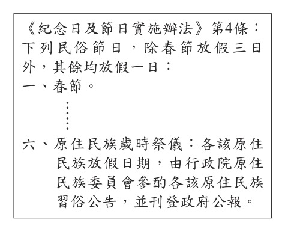
- （A）落實部落自治，提升地方行政效率
- （B）推動觀光發展，增加青年工作機會
- （C）凝聚居民認同，改善社區生活環境
- （D）尊重多元文化，促進部落文化傳承
答案：（D）
詳解與考點
正解：題幹以原住民族歲時祭儀放假為例，法律將傳統祭儀納入規範，關鍵是保障原住民族實踐自身文化的權利。這最能表現尊重多元文化、促進部落文化傳承，D為正解。
A：放假規範的直接目的不是提升地方行政效率，也不能因此推論為落實部落自治，錯誤。
B：規範未以觀光或青年就業為目的，錯誤。
C：凝聚認同、改善社區生活環境不是將祭儀放假的主要法規理由；它看起來對，是因為祭儀可能帶來認同感，但題幹所問的是文化權保障的立法考量，錯誤。
本題考點：多元文化與文化權——國家以節日、放假等制度保障少數族群參與傳統祭儀，可促進文化傳承；判讀政策目的時，要區分直接保障的權利與可能附帶產生的效果。
第 13 題
棗椰樹屬於棕櫚科植物，主要分布在熱帶乾燥地區，其果實稱為椰棗，既可作糧食，又是製糖的原料。全球有上億棵棗椰樹，其中前兩大分布區為西亞和甲地區，椰棗也成為這些地區重要的出口農產品。上述甲地區最可能為下列何者？
- （A）北非
- （B）南歐
- （C）中美洲
- （D）東南亞
答案：（A）
詳解與考點
正解：題幹說棗椰樹主要分布在熱帶乾燥地區，並與西亞同為前兩大分布區；因此應找同樣乾燥、與西亞相連的區域。北非的撒哈拉周邊屬乾燥地區，適合棗椰樹生長，也是椰棗重要產區，故 A 為正解。
B：南歐多為地中海型氣候，並非題幹強調的熱帶乾燥主要分布區，錯誤。
C：中美洲以熱帶濕潤環境為主，與棗椰樹所需的乾燥條件不符，錯誤。
D：東南亞雖在熱帶，但雨量多、受季風影響明顯；它看起來對，是因為容易只看到「熱帶」而忽略「乾燥」這個必要條件，錯誤。
本題考點：氣候與農業分布——判斷作物產區要同時看緯度與乾濕條件；棗椰樹適應熱帶乾燥環境，西亞與北非是重要分布區，不能把所有熱帶地區都視為適生地。
第 14 題
圖(六)的詩為唐代詩人登上今湖北襄陽的一座山頭，見石碑碑文有感而發之作。詩中「水落魚梁淺」指山腳下的魚梁沙洲因水位變化而露出水面，作者藉以說明環境與世事的變化。關於形成「水落魚梁淺」現象的原因，下列推論何者最為適切？
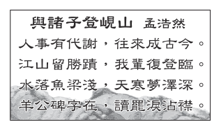
- （A）沙洲上游融冰增加造成水位升降
- （B）季節性降水差異產生的水位變化
- （C）海平面上升海水入侵內陸造成水位改變
- （D）在沙洲下游河段興築大型堤壩導致水位的變化
答案：（B）
詳解與考點
正解：襄陽位於亞熱帶季風氣候區，降水有明顯季節差異，夏季雨多水位高、枯水期雨少水位下降，沙洲便會露出水面。故「水落魚梁淺」最適合以季節性降水差異解釋，B為正解。
A：襄陽非高緯度冰雪融化主導河川水位的地區，錯誤。
C：魚梁位於內陸河川，海平面上升與海水入侵不是主要原因，錯誤。
D：詩境描述自然環境與世事變化，沒有大型堤壩的線索；它看起來對，是因為堤壩確會改變水位，但不能無據加入人為工程，錯誤。
本題考點：河川水位變化——先看區域氣候與降水季節性；季風區雨季、乾季降水差異大時，河川水位與沙洲露出情形會隨季節改變。
第 15 題
圖（七）為跨太平洋夥伴全面進步協定（CPTPP）的 11 個成員國。該協定於 2018 年 12 月 30 日生效，各成員國之間將階段性的廢除關稅，以促進貿易往來。此協定生效後，下列何者最可能因關稅劣勢而受到衝擊？
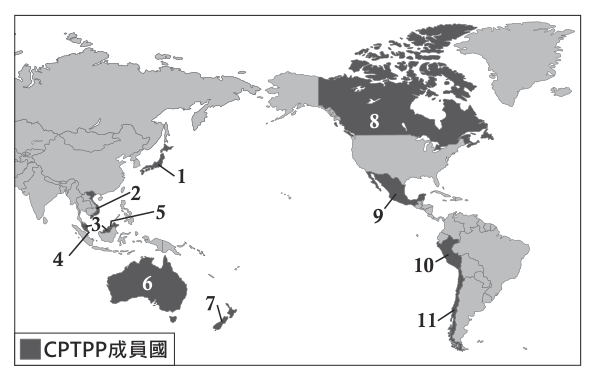
- （A）臺灣的紡織品出口至越南
- （B）加拿大的小麥出口至日本
- （C）墨西哥的汽車出口至智利
- （D）馬來西亞的石油出口至印度
答案：（A）
詳解與考點
正解：題幹的關鍵是 CPTPP 成員國之間階段性廢除關稅，應判斷哪一項貿易不在成員國優惠範圍內。臺灣並非 CPTPP 成員，臺灣紡織品出口到成員國越南時，相對承受關稅劣勢，故 A 為正解。
B：加拿大與日本皆為 CPTPP 成員國，會員間可享關稅減免，故錯誤。
C：墨西哥與智利皆為 CPTPP 成員國，會員間可享關稅減免，故錯誤。
D：馬來西亞雖為成員國，但印度不是 CPTPP 成員；它看起來也像跨國出口，然而關鍵是印度不屬協定的 11 個成員國，不能據此認定馬來西亞有會員關稅優勢，故錯誤。
本題考點：自由貿易協定——成員國間以減免關稅促進貿易；關稅排他效應——非成員出口至成員市場時，可能相對處於關稅劣勢；判準——逐一核對出口國與進口國是否均為協定成員。
第 16 題
某地區於2017年入選為世界遺產，該地區涵蓋了森林、谷地、潟湖及珊瑚礁等景觀，遺產的中心是玻里尼西亞普遍可見的毛利集會中心，此遺產是毛利文化極具代表性的見證。根據上文描述判斷，該遺產最可能位於下列何處？
- （A）(11.88°N，2.49°E)
- （B）(49.93°N，115.43°E)
- （C）(16.84°S，151.37°W)
- （D）(42.85°S，71.87°W)
答案：（C）
詳解與考點
正解：毛利文化屬玻里尼西亞，題幹又提示森林、谷地、潟湖及珊瑚礁等熱帶島嶼景觀，須同時判讀文化區與經緯度。16.84°S、151.37°W位於南太平洋中部的法屬玻里尼西亞一帶，C為正解。
A：11.88°N、2.49°E位於西非，非玻里尼西亞島嶼文化區，錯誤。
B：49.93°N、115.43°E位於中國北方，緯度較高且不符合潟湖珊瑚礁的熱帶島嶼環境，錯誤。
D：42.85°S、71.87°W位於南美巴塔哥尼亞，非南太平洋玻里尼西亞地區，錯誤。
本題考點：座標判讀——先用南北緯、東西經定位半球與大致區域，再以文化與自然景觀線索縮小範圍；玻里尼西亞的熱帶島嶼常可連結南太平洋中部。
第 17 題
《周成過臺灣》是著名的民間傳說，其時代背景符合史實。故事描述周成拋下故鄉泉州的妻兒，獨自來臺經商。適逢淡水、雞籠開港通商，周成在大稻埕從事新興商品出口而致富。後來周成移情別戀，謀殺了來臺灣探視的妻子，最終受到報應而死。根據上述內容，周成最有可能從事下列何種商品的貿易？
- （A）茶葉
- （B）鹿皮
- （C）蔗糖
- （D）鴉片
答案：（A）
詳解與考點
正解：題幹以淡水、雞籠開港通商及大稻埕為線索，問清末臺灣的新興出口商品。淡水、雞籠在1860年代開港後，大稻埕發展為茶葉集散地，茶葉成為重要新興出口品，故 A 為正解。
B：鹿皮貿易盛行於較早期，非題幹所指開港後大稻埕的新興商品，錯誤。
C：蔗糖雖是出口品，主要與南部及既有產業相關，未對應大稻埕的茶葉貿易，錯誤。
D：鴉片屬進口品，不是此處的新興出口商品，錯誤。
本題考點：清末臺灣經濟——淡水、雞籠開港後，大稻埕成為茶葉集散地；史料線索判讀——先將港口、地點與「新興出口」連結，再區分早期鹿皮、南部蔗糖及進口鴉片。
第 18 題
以下是某歷史人物在其著作中的相關內容：「我們可以假設人類在社會形成以前，所有人都是平等的。然而人們為了解決集體生活所產生的問題，透過公眾的協商形成公意，且將全部的權力，託付由公意組成的政府，因為能夠代表公意的政府，是不受私念限制、必然公正的。政府依循公意制定法律、建立秩序，人們只要守法、服從公意，就能得到真正的自由。」上述內容最可能與下列何者有關？
- （A）盧梭關於主權在民的主張
- （B）希特勒針對種族主義的論述
- （C）馬克思對於工廠制度的批評
- （D）孟德斯鳩闡明三權分立的觀點
答案：（A）
詳解與考點
正解：題幹反覆出現人民平等、社會形成前的自然狀態、公意、政府代表公意，以及守法服從公意才有真正自由，這是盧梭社會契約論中主權在民的核心主張，因此A為正解。
B：希特勒的論述以種族主義與種族優越為重點，非公意與社會契約，錯誤。
C：馬克思批評工廠制度與資本主義的階級剝削，與題幹的公意概念不同，錯誤。
D：孟德斯鳩也關心自由，但以三權分立限制權力為核心；它看起來對，是因為同樣談政府與自由，然而題幹的判別詞是「公意」，錯誤。
本題考點：啟蒙思想辨識——「公意」「社會契約」「主權在民」對應盧梭；「三權分立」對應孟德斯鳩，應以關鍵概念區分思想家。
第 19 題
圖(八)是霞喀羅國家步道的介紹圖，其舊名為「霞喀羅、薩克亞金警備道路」。此道路的開闢，是因為過去臺灣統治者為達到某一目的而下令修築。根據圖中內容判斷，統治者最初開闢這條道路的目的，最可能與下列何者有關？
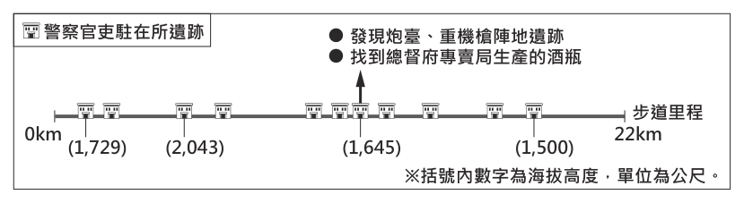
- （A）劃界封山的施行
- （B）新式製糖的推動
- （C）海運港口的整建
- （D）理蕃政策的實施
答案：（D）
詳解與考點
正解：題幹的舊名是「警備道路」，圖中又有警察官吏駐在所、炮臺與機槍陣地遺跡，顯示道路用於山區控制與武力警備。日本統治臺灣時為控制、鎮壓原住民族而推動理蕃政策，故D為正解。
A：劃界封山是清領前期的山地政策，與日治時期警備道路的設置脈絡不同，錯誤。
B：新式製糖需要平原農業原料與糖廠運輸，不能解釋山區駐在所和武器陣地，錯誤。
C：海運港口整建應有港灣與海運設施線索，非山區警備道路，錯誤。
本題考點：日治時期理蕃政策——看到警備道路、駐在所與武裝設施，應連結政府進入並控制山地與原住民族的措施；政策判讀要以設施功能和時代背景共同判斷。
第 20 題
「關於我的『政治主張』，因為和蔣委員長在意見上的衝突，已經沒有和解的跡象。我考慮了三種方法來解決此事，第一是辭職、第二是勸諫、第三是兵諫。第一個方法因為我的國難家仇，和東北軍部下們的反對而不可行。最近我試了第二個方法，但導致蔣委員長極端憤怒。因此我決定採取第三個方法，以武力拘禁蔣委員長。」上述「政治主張」最可能為下列何者？
- （A）立即停止內戰，聯合各黨派抗日
- （B）反對洪憲帝制，起兵討伐袁世凱
- （C）終結軍閥混戰，完成中國的統一
- （D）攘外必先安內，全力剿滅共產黨
答案：（A）
詳解與考點
正解：文中人物因與蔣委員長衝突，決定以兵諫拘禁他，這正是1936年張學良、楊虎城發動的西安事變。其政治訴求是停止國共內戰、聯合各黨派抗日，因此A為正解。
B：反對洪憲帝制、討伐袁世凱是護國運動，時間與人物均不符，錯誤。
C：終結軍閥混戰、完成中國統一是北伐相關目標，非西安事變的直接訴求，錯誤。
D：「攘外必先安內」是蔣介石優先剿共的立場；它看起來對，是因為題幹提到蔣委員長，但文中人物正是反對此立場才發動兵諫，錯誤。
本題考點：西安事變——見到張學良、楊虎城以兵諫拘禁蔣介石的線索，應連結1936年西安事變；其核心主張是停止內戰、共同抗日，須與「攘外必先安內」區分。
第 21 題
雅加達自十七世紀以來一直是印尼的政治、經濟中心，不過由於人口過於集中加上大量開發，對環境已產生過多負荷。近年來，雅加達的民眾飽受交通壅塞、空氣汙染、地層下陷及水患之苦，因此印尼政府計畫將首都遷至婆羅洲。但有生態專家提出警告，該處是紅毛猩猩的棲息地，遷都計畫所需的開發過程必須謹慎評估，否則反而可能破壞環境，造成生態浩劫。上述討論內容與下列何項議題最相符？
- （A）歷史古都的文化保存
- （B）遷移首都的機會成本
- （C）都市人口結構的變化
- （D）群島國家國土的擴張
答案：（B）
詳解與考點
正解：題幹關鍵在於遷都雖可減輕雅加達的人口與環境負荷，卻可能犧牲婆羅洲紅毛猩猩棲息地，須以「為達目標所付出的代價」判斷機會成本。遷都的生態破壞是為改善雅加達問題而承擔的代價，故 B 為正解。
A：題幹未討論歷史古都建築、古蹟或文化資產的保存，錯誤。
C：文中說人口過度集中造成負荷，並未比較人口年齡、性別等人口結構的變化，錯誤。
D：遷都是在既有國土內改變首都所在地，沒有擴張國土，錯誤。它看起來對，是因為題幹提到婆羅洲，但地點改變不等於領土增加。
本題考點：機會成本——比較一項選擇的效益與為取得它所犧牲的代價；議題辨識——先抓題幹的因果關係，遷都改善舊都問題卻可能破壞新址生態，即是在討論遷都的機會成本。
第 22 題
國際刑警組織共有195個成員國，總部建有一個存放上百萬名國際刑事罪犯檔案的資料庫供成員國使用。我國目前受限於一個中國原則，無法加入此國際組織，因此未能分享或接收該組織的情報資訊，所以難以確認入境我國的旅客在境外是否有犯罪紀錄，而從我國潛逃出境的犯罪者也較難被繩之以法。上述內容顯示一個中國原則對我國產生下列哪一影響？
- （A）兩岸互信不足造成軍事衝突現象頻傳
- （B）兩岸交流趨緩使得經濟貿易往來受阻
- （C）資訊科技落差造成區域發展程度不均
- （D）資訊傳達受限使得國內治安風險升高
答案：（D）
詳解與考點
正解：題幹關鍵在我國無法加入國際刑警組織，因而無法交換境外犯罪紀錄與追緝資訊，直接影響犯罪預防與追緝。資訊傳達受限會提高國內治安風險，故 D 為正解。
A：題幹沒有兩岸軍事衝突的資料，無法推論軍事衝突頻傳，錯誤。
B：內容談的是國際刑事情報，不是兩岸經濟貿易往來，錯誤。
C：無法共享資料的原因是國際組織參與受限，不是資訊科技程度落差，錯誤。
本題考點：國際組織參與——能否加入影響會員國間的合作與資訊交換；治安風險判讀——犯罪紀錄難查核、逃犯難追緝，會直接增加治安維護的困難。
第 23 題
圖（九）呈現我國 1998 至 2018 年間，收入最高 20% 家庭與收入最低 20% 家庭的可支配所得成長率變化，其中灰階區塊是曾發生經濟成長率大幅衰退的兩段時間。根據圖中內容判斷，上述兩個灰階區塊的數據，呈現出下列哪一現象？
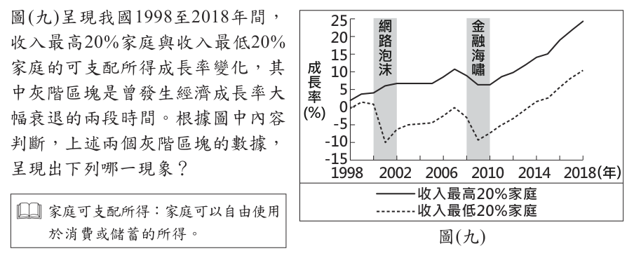
- （A）收入較高者的財富減損情況較嚴重
- （B）收入較低者的生活面臨較嚴重衝擊
- （C）經濟大幅衰退造成區域間發展不均
- （D）經濟大幅衰退反而縮小了貧富差距
答案：（B）
詳解與考點
正解：題幹要求比較兩段經濟成長率大幅衰退期間的不同所得家庭可支配所得成長率。灰階區塊中，收入最低 20％家庭的成長率下滑較明顯，表示收入較低者的生活面臨較嚴重衝擊，故 B 為正解。
A：圖表呈現的是可支配所得成長率，不是財富總額或財富減損程度，無法作此推論。
C：圖中沒有區域別資料，不能推論區域間發展不均。
D：衰退期間並未顯示貧富差距縮小；它看起來對，是因為兩組成長率都下降，但仍須比較兩者下降幅度。
本題考點：圖表判讀——先確認縱軸資料是所得成長率而非財富總額；分配影響——比較不同所得組的變動幅度，判斷何者受衝擊較大。
第 24 題
甲在質詢行政院衛生福利部部長時，指出某飲料製造商早已知道自家產品出現變質問題，嚴重影響消費者權益，但該公司卻不主動回收處理，反而繼續販售變質的產品，對於這種明知故犯的行為，政府應予以重罰。關於甲所擔任的公職，下列敘述何者正確？
- （A）負責審查法律是否違憲
- （B）負責審查中央政府預算
- （C）經由地方層級的選舉所產生
- （D）由行政院院長提請總統任命
答案：（B）
詳解與考點
正解：題幹中甲能質詢行政院衛生福利部部長，關鍵是「質詢部長」，可判斷甲為立法委員。立法院職權包括審查中央政府預算，B 正確，故 B 為正解。
A：審查法律是否違憲是司法院大法官的職權，不是立法委員職權。
C：立法委員是中央民意代表，並非地方層級民意代表；其席次有區域、原住民及全國不分區與僑居國外國民等不同類型，不能概括為經由地方層級選舉產生。
D：由行政院院長提請總統任命，是行政院各部會首長的任命方式，不是立法委員的產生方式。
本題考點：立法委員職權——能對行政院官員質詢，並審查中央政府預算；公職辨識——先從題幹行為判斷身分，再核對該職務的產生方式與權限。
第 25 題
圖(十)為世界銀行繪製用來展現世界各國經濟實力的示意圖，圖中矩形面積的大小可呈現 2011 年該國經濟規模的大小。圖中甲國最可能是下列何者？
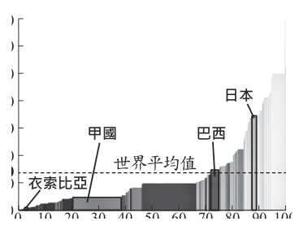
- （A）印度
- （B）美國
- （C）德國
- （D）奈及利亞
答案：（A）
詳解與考點
正解：題幹圖以矩形面積表示經濟規模，並以橫軸人口、縱軸人均 GDP 判讀；甲國橫向很寬表示人口眾多，人均 GDP 又低於世界平均，最符合印度，故 A 為正解。
B：美國人均 GDP 高於世界平均，應位在較高的人均 GDP 位置，不符甲國。
C：德國人口規模遠小於人口眾多的甲國，且人均 GDP 較高，不符。
D：奈及利亞人均 GDP 雖較低，但人口與經濟規模都不及甲國，矩形面積不符。
本題考點：統計圖判讀——矩形面積代表經濟規模時，須合併人口與人均 GDP 判斷；國別特徵——人口多且人均 GDP 低於世界平均的組合最符合印度。
第 26 題
圖(十一)為貫穿美洲的泛美公路示意圖，主幹線北起美國阿拉斯加，南至智利。美洲多國可透過這個公路系統相互連結，但巴拿馬到哥倫比亞之間的路段至今尚未修建。根據圖中資訊判斷，該路段未修建的原因之一最可能為下列何者？
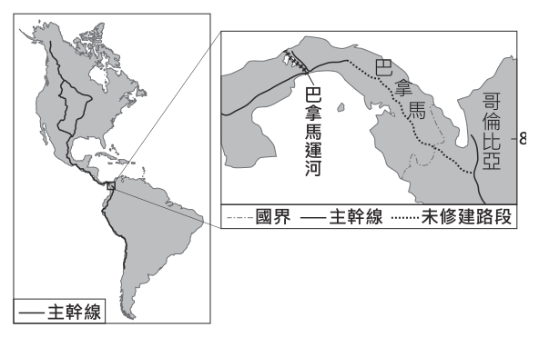
- （A）年溫差大施工困難
- （B）保護熱帶雨林生態
- （C）運河阻隔難以跨越
- （D）維護因紐特人文化
答案：（B）
詳解與考點
正解：題幹問巴拿馬與哥倫比亞間泛美公路缺段的原因，須結合該處位於達連隘口的熱帶雨林與沼澤環境判斷。未修建道路可避免開發破壞原始熱帶雨林生態，故 B 為正解。
A：該地接近低緯度，全年氣溫變化較小，年溫差大不是主要施工障礙，錯誤。
C：兩地間未通車的主要阻隔是熱帶雨林與沼澤，不是巴拿馬運河，錯誤。它看起來對，是因為巴拿馬以運河聞名，但運河不在這段陸路缺口的判斷重點。
D：因紐特人主要分布於北美高緯度與北極周邊，非巴拿馬、哥倫比亞交界地區，錯誤。
本題考點：區域地理判讀——先定位巴拿馬與哥倫比亞交界的達連隘口；熱帶雨林保育——大型交通建設可能破壞棲地，因此保護生態可成為不開發的原因。
第 27 題
西班牙海外島嶼的某座火山於2021年 9月噴發，圖 (十二) 為其噴發後熔岩流及火山灰落塵分布的狀況。根據圖中資訊判斷，下列推論何者較為合理？
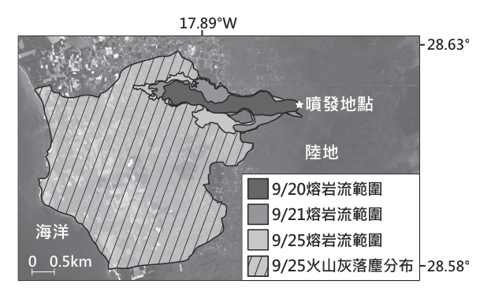
- （A）當時的主要風向為西風
- （B）該區域的地勢西高東低
- （C）火山熔岩流向西流往太平洋
- （D）火山噴發地點距海約6公里
答案：（D）
詳解與考點
正解：題幹要求依圖中資訊推論，應以比例尺 0.5公里逐段量測火山噴發地點到海岸的圖上距離，再換算實際距離。量得約為 12 個 0.5公里刻度，12×0.5=6公里，因此噴發地點距海約 6公里，故 D 為正解。
A：圖中火山灰落塵主要分布在噴發地點的西側至西南側，表示火山灰被風向西吹送，噴發當時應為偏東的風；若為西風，落塵應集中在噴發地點東側，與圖示不符，錯誤。
B：熔岩自東側的噴發地點向西流入海，顯示噴發地點一帶地勢東高西低，與「西高東低」相反；圖中也沒有等高線或海拔資料支持該敘述，錯誤。
C：圖示可見熔岩向西流入海，但該島位於大西洋，非太平洋，錯誤。它看起來對，是因為「向西流」容易聯想到西側的大洋，仍須先辨認島嶼所在海域。
本題考點：地圖比例尺換算——圖上距離先對照刻度，再乘以每一刻度代表的實際距離；圖資判讀——火山灰落塵的延伸方向可反推噴發當時的風向，熔岩流向可反映地勢高低，須逐一與選項敘述比對。
第 28 題
臺灣本島的經緯度約介於 22°N～25°N，120°E～122°E 之間，降水的空間分布受到地形及季風的影響而有顯著差異。表（三）為本島四個氣象測站的資料，根據各測站位置及地形判斷，何者的年降水量可能最多？
表（三）| 測站 | 緯度 | 經度 | 高度（m） |
|---|
| 甲 | 23.98°N | 121.61°E | 16.0 |
| 乙 | 25.13°N | 121.74°E | 26.7 |
| 丙 | 22.99°N | 120.20°E | 40.8 |
| 丁 | 23.95°N | 120.59°E | 34.0 |
- （A）甲
- （B）乙
- （C）丙
- （D）丁
答案：（B）
詳解與考點
正解：本題依測站的經緯度、高度與地形、季風判斷年降水量。乙站位於臺灣東北端（25.13°N、121.74°E），冬季正對東北季風、迎風面地形抬升明顯，全年降水量最可能最多，故B為正解。
A：甲站位於東部海岸（121.61°E、23.98°N，花蓮一帶），雖同受東北季風影響，但緯度偏南、正對迎風的程度不及東北端的乙，年降水量通常不及乙，錯誤。
C：丙站位於西南部（120.20°E、22.99°N），主要靠夏季西南季風降水；但全年比較還須計入冬季東北季風，丙處東北季風背風側，全年降水優勢不及乙，錯誤。
D：丁站位於西部平原（120.59°E、23.95°N），缺少東北端迎風面與地形抬升的有利條件，年降水量不及乙，錯誤。
本題考點：臺灣降水空間分布——判斷年雨量須同時比較全年季風風向與測站在迎風面或背風面的位置，並以經緯度定位測站落在東部、西部平原或西南部；東北季風期間東北部迎風面因地形抬升最多雨，不能只憑夏季西南季風判斷。
第 29 題
「距今六千多年前，此地區的人們觀察到，大約每隔365天，天狼星在拂曉的時候，和太陽同時位於東方的地平線上。因此他們定365天為一年，每年分為 12個月，每月30天，年末加上5天。這種遵循太陽週期的曆法，依自然現象將一年分為『阿赫特』、『佩雷特』、『夏矛』三個季節，有別於同時期兩河流域的月亮週期曆法。」根據上文，「此地區」的發明最可能與下列何者有關？
- （A）推算河川氾濫情形，掌握農業生產
- （B）公民參與城邦事務，展現民主精神
- （C）基於因果輪迴觀念，建立階級制度
- （D）追尋宇宙創世真理，崇奉一神信仰
答案：（A）
詳解與考點
正解：題幹的 365天、太陽週期與三個季節，指向古埃及依尼羅河自然節律發展的太陽曆。掌握曆法可推算河川氾濫時機並安排耕作，故 A 為正解。
B：公民參與城邦事務與民主政治是古希臘的特色，非古埃及曆法的發明動機，錯誤。
C：因果輪迴與階級制度常連結古印度文化，與文中的太陽曆及河川農業無關，錯誤。
D：一神信仰並非此曆法用來分季與定年的主要目的，錯誤。
本題考點：古埃及文明——尼羅河氾濫與農業生產密切相關；曆法功能——依天文與自然週期定年、分季，可用來預測農事時序。
第 30 題
某中共領導人接見日本國會議員時提到：「戰後日本很快就發達起來，這經驗很值得中國學習。當然，別人的經驗照搬也不行，中國有中國的條件，日本有日本的條件。我們不但要引進發達國家的資金和技術，充分利用各國的好經驗，並且要把這種經驗與中國的實際情況結合起來。」上述談話最可能與下列何者有關？
- （A）發起文化大革命，破除四舊
- （B）推動農工大躍進，超英趕美
- （C）沒收地主土地，分配給貧農
- （D）實施改革開放，設經濟特區
答案：（D）
詳解與考點
正解：談話中的「引進發達國家的資金和技術」、「充分利用各國的好經驗」與結合中國實際情況，指向對外開放的經濟政策。這是鄧小平推動改革開放、設立經濟特區的核心思路，D 為正解。
A：文化大革命強調破除四舊與政治運動，並非引進外資與技術。
B：大躍進提出超英趕美，但屬封閉式群眾動員，與談話主張引進外資技術不合。它看起來對，是因為同樣出現學習外國、追求發展的語意，但政策方法不同。
C：沒收地主土地分配給貧農是土地改革內容，與吸引外資、設經濟特區無關。
本題考點：改革開放——強調引進外資與技術、學習外國經驗並結合本國條件；政策辨識——看到經濟特區與對外資金技術開放，應連結鄧小平時期的改革開放。
第 31 題
表（四）呈現甲國於兩次世界大戰中，在歐洲戰場開始參戰與結束參戰的原因。表中的「？」最適合填入下列何者？
表（四）| 甲國在歐洲戰場的情形 | 第一次世界大戰 | 第二次世界大戰 |
|---|
| 開始參戰的原因 | 支援「斯拉夫兄弟」 | 德國毀約攻打國土 |
| 結束參戰的原因 | ？ | 德國投降 |
- （A）美國投下原子彈，敵國投降
- （B）簽署《凡爾賽條約》，戰敗投降
- （C）國內共產政權成立，向同盟國議和
- （D）美國反對無限制潛艇政策，援助協約國
答案：（C）
詳解與考點
正解：表中甲國因支援塞爾維亞參戰，可判斷為俄國；第一次世界大戰期間俄國爆發革命，共產政權成立後向同盟國議和並退出戰爭。C 符合，故 C 為正解。
A：美國投下原子彈是第二次世界大戰末期的事件，與俄國退出第一次世界大戰無關。
B：《凡爾賽條約》是第一次世界大戰後的和約，非俄國退出戰爭的原因。
D：美國反對無限制潛艇政策而援助協約國，是美國參與第一次世界大戰的脈絡，不是俄國退出戰爭的原因。
本題考點：第一次世界大戰——俄國因支援塞爾維亞參戰；俄國退出原因——革命後共產政權成立，轉而向同盟國議和。
第 32 題
西元前十ㄧ世紀周人滅商後，其勢力持續向東方擴展，由於周管轄的土地與人口在短時間內急速增加，為了天下的長治久安，因此周朝的統治者，設計出一套有效的政治制度管理各地。上述政治制度的內容，最可能是下列何者？
- （A）在領土內設置郡、縣，官員由國君直接任免
- （B）實施科舉制度，促進社會各階層人才的流動
- （C）將百姓編入戶籍，並以法律規範人民的義務
- （D）依據貴族的身分等級，授予土地與冊封爵位
答案：（D）
詳解與考點
正解：題幹的周滅商後領土、人口迅速增加，觸發西周以分封管理廣大地域的制度。統治者依貴族身分授予土地並冊封爵位，藉此要求諸侯效忠與協助治理，故 D 為正解。
A：郡縣由中央直接任免官員，是秦朝以後的郡縣制度特色，錯誤。
B：科舉制度用考試選才，始於隋唐，不是西周制度，錯誤。
C：編戶與以法律規範人民義務，是秦代法家統治的重要措施，非西周分封內容，錯誤。
本題考點：西周分封——依貴族關係與功勞封授土地、爵位給諸侯；制度辨識——看見周初擴張與治理各地，優先連結分封制，而非郡縣制或科舉制。
第 33 題
「某位君主為了統治上的考量，需要招募許多能夠書寫的人才。一開始在他的國度中，竟然找不到太多有文化的人，這是因為西羅馬帝國滅亡後，城市生活逐漸消失，文化知識也幾乎被遺忘殆盡。因此這位君主特地聘請知名學者，來主持文化復興工作，諸如設立新學校、抄寫古羅馬的重要拉丁文著作，使拉丁文成為各地共通的文字系統。」上述學者的身分，最可能是下列何者？
- （A）西元前五世紀的希臘哲學家
- （B）西元八世紀的基督教教士
- （C）西元十七世紀的歐洲天文學者
- （D）西元十八世紀的啟蒙運動思想家
答案：（B）
詳解與考點
正解：題幹提到西羅馬帝國滅亡後文化衰微，君主又聘學者設校、抄寫拉丁文著作，這是8世紀查理曼推動的加洛林文藝復興。查理曼聘請英格蘭學者阿爾昆主持文化復興，學者身分符合基督教教士，故 B 為正解。
A：西元前五世紀的希臘哲學家早於題幹的中世紀背景，年代不符。
C：西元十七世紀的歐洲天文學者屬近代科學發展時期，年代不符。
D：西元十八世紀的啟蒙運動思想家晚於查理曼時代約1,000年，年代不符。
本題考點：加洛林文藝復興——8世紀查理曼以辦學、抄錄拉丁典籍推動文化復興；歷史人物判讀——先由制度與文化活動定位時代，再比對人物身分。
第 34 題
在探討一國國內不同地區醫療資源差異時，通常會先觀察醫師人數和病床數，由相關數據與人口數的相對關係，可大致推論一個地區的醫療資源是否不足。表（五）是某國 2018 年四個地區關於人口與醫療資源的資料：根據表中資料判斷，關於甲、乙、丙、丁四個地區的醫療資源，下列何項推論最適當？
表（五） 某國 2018 年四個地區關於人口與醫療資源的資料| 地區 | 人口總數（人） | 老年人口比例（%） | 醫師人數（人） | 平均每位醫師負擔人數（人） | 病床數（張） | 平均每張病床負擔人數（人） |
|---|
| 甲 | 2,562,738 | 19.50 | 9,719 | 263.7 | 19,951 | 128.5 |
| 乙 | 2,272,459 | 13.26 | 3,824 | 594.3 | 11,988 | 189.6 |
| 丙 | 673,309 | 19.42 | 881 | 764.3 | 3,204 | 210.1 |
| 丁 | 322,836 | 17.95 | 820 | 393.7 | 4,073 | 79.3 |
- （A）老年人口最多的地區醫療資源最為不足
- （B）人口總數最少的地區醫療資源最為不足
- （C）相對於其他地區，乙地區的醫療資源最為不足
- （D）相對於其他地區，丙地區的醫療資源最為不足
答案：（D）
詳解與考點
正解：題幹要求以人口與醫療資源的相對關係判斷，應比較平均每位醫師及每張病床負擔的人數；負擔人數越高，表示資源越不足。表中丙地每位醫師負擔 764.3人、每張病床負擔 210.1人，兩項均為四地最高，故 D 為正解。
A：甲地老年人口比例 19.50％最高，但醫師與病床負擔分別為 263.7人、128.5人，並非最高，不能據此判定最不足，錯誤。
B：丁地人口總數 322,836人最少，醫師與病床負擔為 393.7人、79.3人，尤其病床負擔最低，錯誤。
C：乙地每位醫師負擔 594.3人、每張病床負擔 189.6人，均低於丙地的 764.3人、210.1人，錯誤。
本題考點：相對量判讀——比較醫療資源時以每位醫師、每張病床負擔人口為準，不能只看總人口或老年人口比例；資源不足判準——負擔人口越多，代表每人可分配到的醫療資源越少。
第 35 題
「飢餓行銷」是一種常見的行銷手法，指的是業者在短時間內利用各種管道宣傳大批民眾排隊購買的熱潮，營造該項商品都會很快被搶購一空的情況，透過媒體將商品炒作成為時下流行的話題，進而引起民眾的消費欲望。關於上述行銷手法對於消費市場的影響，下列敘述何者最適當？
- （A）廠商間的競爭使消費者的選擇增加
- （B）業者的行銷手法將提高市場競爭程度
- （C）消費者受價格誘因影響而增加消費欲望
- （D）民眾的購物意願受非金錢誘因影響而提高
答案：（D）
詳解與考點
正解：題幹的排隊熱潮、搶購一空與流行話題，是利用稀缺感與從眾心理刺激購買，而非直接降低價格。民眾購物意願受非金錢誘因影響而提高，故 D 為正解。
A：題幹未比較不同廠商或商品種類，不能推論消費者選擇增加，錯誤。
B：這是單一業者的行銷手法，未說明廠商數量或競爭程度提高，錯誤。
C：題幹沒有折扣、降價或價格變動，消費欲望不是受價格誘因影響，錯誤。它看起來對，是因為行銷確實會提高購買意願，但須分辨題幹使用的是價格還是話題與稀缺感。
本題考點：誘因分類——折扣、降價屬金錢誘因，聲量、流行與稀缺感屬非金錢誘因；市場資訊判讀——題幹沒有競爭者或價格資料時，不可自行推論競爭程度或價格效果。
第 36 題
若有人為了在選舉時讓支持的候選人當選，配合動員把戶籍遷移到非實際居住的行政區，企圖影響選舉結果，此種行為可能觸犯《刑法》，檢察官將代表國家主動起訴違法者。根據上述內容判斷，關於某位違法遷移戶籍者在接受偵查、審判的過程中，下列何種情況最可能出現？
- （A）遭到落選者提起民事訴訟要求損害賠償
- （B）在遭檢察官偵查的過程中度過18歲生日
- （C）被查出是在投票日的六個月前遷移戶籍
- （D）因為觸犯告訴乃論之罪而受到刑事處罰
答案：（C）
詳解與考點
正解：題幹明示違法遷移戶籍是為影響選舉結果，且由檢察官代表國家主動起訴，應以投票權的設籍期間判斷。投票日前 4 個月設籍才有投票權；若在投票日 6 個月前遷移戶籍，已在期間內，可能成為偵查所查出的事實，故 C 為正解。
A：題幹所述是可能觸犯刑法的行為，檢察官進行刑事偵查；落選者提起民事損害賠償不是最符合的程序，錯誤。
B：行為人是否在偵查期間滿 18歲與是否違法遷移戶籍及刑事程序無直接關聯，錯誤。
D：題幹已說檢察官代表國家主動起訴，這是非告訴乃論罪的特徵，非告訴乃論罪，錯誤。
本題考點：公訴罪與告訴乃論——檢察官可主動追訴者，不以被害人提出告訴為必要；選舉權設籍期間——判讀遷籍案件時，要核對遷入時間是否已達投票資格所需期間。
第 37 題
臺灣少子女化危機惡化的速度超乎想像，面對人口負成長的人口懸崖，有學者認為政府過往提出的相關政策已是緩不濟急，或許可以透過社會增加的方向，思考提高國民人數的對策。根據上述內容判斷，下列何項對策與該學者的意見最相符？
- （A）提高外籍移工僱用人數
- （B）鼓勵各國人才歸化入籍
- （C）推動老人長期照護政策
- （D）增加公立幼兒托育中心
答案：（B）
詳解與考點
正解：題幹指定以「社會增加」提高國民人數，社會增加是移入人口減去移出人口。鼓勵各國人才歸化入籍，能直接增加國民人數，故 B 為正解。
A：提高外籍移工僱用人數不必然取得國籍，不能直接增加國民人數，錯誤。
C：長期照護是因應高齡化的社會福利政策，不是增加國民人數的移入措施，錯誤。
D：增加公立幼兒托育中心可支持育兒，較可能影響出生率等自然增加，非直接的社會增加，錯誤。它看起來對，是因為它有助改善少子女化環境，但題幹限定的是社會增加。
本題考點：人口成長——自然增加為出生減死亡，社會增加為移入減移出；對策配對——要增加國民人數的社會增加，應選促進外來人口歸化入籍的措施。
第 38 題
表(六)為某作家的三部長篇小說內容簡介，該作家藉此構築十九至二十世紀臺灣歷史的發展過程。根據表中內容判斷，這三部小說呈現的時代先後順序，最可能是下列何者？
表(六)| 著作 | 內容簡介 |
|---|
| 甲 | 刻畫多位臺灣青年在南洋戰場上被戰爭折磨至精神崩潰，甚至喪生的悲慘命運。 |
| 乙 | 敘述客家族群在臺灣中部山區生產樟腦，為保衛家園參與武裝抗日的故事。 |
| 丙 | 描繪臺灣人藉由參加文化協會、組織農民運動，抵抗殖民統治的事蹟。 |
- （A）乙→甲→丙
- （B）丙→乙→甲
- （C）丙→甲→乙
- （D）乙→丙→甲
答案：（D）
詳解與考點
正解：題幹須依表中事件年代排序。乙的客家族群武裝抗日發生在 1895 年乙未割臺後初期；丙的文化協會與農民運動是 1920 年代的非武裝抗日；甲的南洋戰場則為第二次世界大戰時期。依序為乙→丙→甲，故 D 為正解。
A：乙→甲→丙把第二次世界大戰時期的甲排在 1920 年代的丙之前，時序錯誤。
B：丙→乙→甲把 1920 年代的丙排在 1895 年後初期的乙之前，時序錯誤。
C：丙→甲→乙把 1920 年代的丙與第二次世界大戰時期的甲都排在 1895 年後初期的乙之前，時序錯誤。
本題考點：臺灣日治時期分期——1895 年後初期有武裝抗日，1920 年代有文化協會與農民運動，二戰期間有南洋戰場經驗；歷史排序——以明確事件與年代作為排序依據。
第 39 題
明清時期，蠶絲業是中國江南地區的重要產業。當時產出的生絲，主要供應國內需求，部分對外出口。下列何者最可能反映 1830 年代生絲出口的情況？
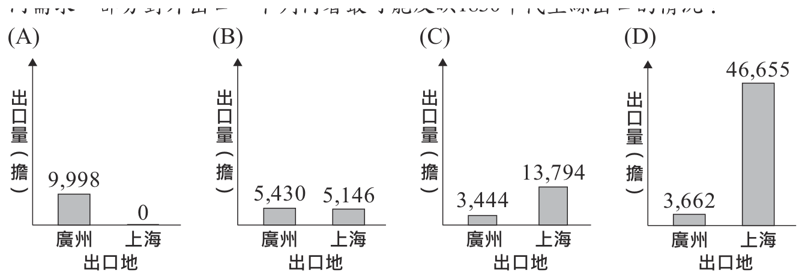
本題選項為上圖中的 A／B／C／D，請對照圖片作答。
答案：（A）
詳解與考點
正解：題幹限定 1830 年代，關鍵在通商口岸尚未因 1842 年《南京條約》而開放上海；當時中國對外貿易主要集中於廣州，因此反映廣州出口量高、上海近乎為零的圖應為 A。
B：若圖示上海已有顯著生絲出口，便把 1842 年後上海開港的情況提前到 1830 年代，錯誤。
C：若圖示上海出口量高於廣州，同樣不符當時上海尚未開港的條件。它看起來對，是因為近代上海確是重要港口，但題幹問的是更早的 1830 年代。
D：若圖示多個港口已有分散而大量的出口，亦不符當時對外口岸集中於廣州的情況。
本題考點：清代通商口岸——判讀貿易資料須先核對年代與港口開放時序；1842 年前廣州是主要對外口岸，上海開港後才成為重要貿易港。
第 40 題
表(七)是甲、乙兩國匯率變動的情形。根據表中內容判斷，若其他條件不變，且所有成本完全反應在商品售價上，相較於去年，在今年甲、乙兩國的市場中，最可能出現下列何種情形？
- （A）甲國商品在乙國的銷售量下滑
- （B）乙國商品在甲國的銷售量下滑
- （C）甲國進口的乙國商品數量下降
- （D）乙國進口的甲國商品價格下降
答案：（A）
詳解與考點
正解：表中 1甲幣可兌換的乙幣由去年 10 增至今年 20，表示同一甲幣能換到更多乙幣，甲幣升值、乙幣貶值。甲國商品換算成乙幣後價格提高，乙國消費者購買量最可能下滑，故 A 為正解。
B：乙幣貶值後，乙國商品換算成甲幣較便宜，在甲國的銷售量較可能上升，錯誤。
C：甲國進口乙國商品時，乙國商品因乙幣貶值而較便宜，進口數量較可能增加，錯誤。
D：乙國進口甲國商品時，甲幣升值使甲國商品價格上升，不會下降，錯誤。
本題考點：匯率判讀——1單位本國貨幣可換得更多外幣，代表本國貨幣升值；貿易效果——本國貨幣升值使本國商品對外變貴、外國商品對內變便宜。
第 41 題
圖(十三)是一座歷史建築，根據圖中內容判斷，該建築最可能興建於下列何時何地？
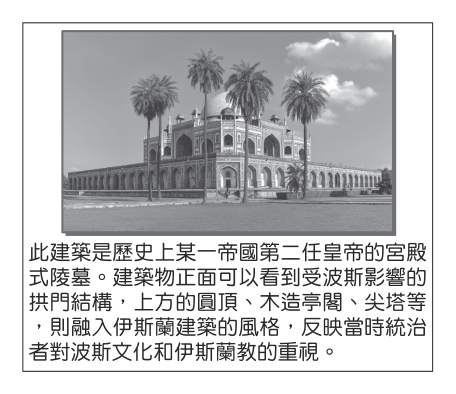
- （A）西元前六世紀的波斯地區
- （B）西元六世紀的阿拉伯半島
- （C）西元十六世紀的印度半島
- （D）西元十九世紀的南美地區
答案：（C）
詳解與考點
正解：題幹的關鍵是「某一帝國第二任皇帝的宮殿式陵墓」，以及受波斯影響的拱門、圓頂、木造亭閣與尖塔等伊斯蘭建築特徵。這符合印度蒙兀兒帝國第二任皇帝胡馬雍（Humayun）的陵墓，由其王后於西元十六世紀約 1565 至 1572 年下令興建於印度半島，故 C 為正解。
A：波斯文化確實影響這座陵墓，但建築本體不是西元前六世紀興建於波斯地區，錯誤。
B：阿拉伯半島是伊斯蘭教興起地，卻不是胡馬雍陵所在地，且年代不符。
D：十九世紀南美地區與蒙兀兒帝國的建築脈絡無關，錯誤。
本題考點：歷史建築判讀——同時比對建築風格、統治者身分、年代與地點；蒙兀兒帝國——胡馬雍陵位於印度、興建於 16 世紀，受波斯與伊斯蘭建築影響；相似建築辨析——泰姬瑪哈陵為第五任皇帝沙賈漢為皇后所建，屬 17 世紀，不可混淆。
第 42 題
為維護消費者權益，政府制定法律對市場上供應不實有機農產品的業者處以罰鍰，同時也能保障生產真正有機農產品農民的權益。上述主管機關對不實業者的處罰，與下列何者受到的處罰類型相同？
- （A）小華拒絕歸還向同事借的相機
- （B）大明竊取隔壁鄰居家中的財物
- （C）官員制定政策引發許多民眾不滿
- （D）父母縱容少年抽菸而遭行政處分
答案：（D）
詳解與考點
正解：題幹的主管機關對不實有機農產品業者處以罰鍰，屬行政機關依法作成的行政罰。父母縱容少年抽菸而遭行政處分，同樣是行政罰，故 D 為正解。
A：拒絕返還借用相機涉及借貸、返還或損害賠償等民事責任，不是行政罰，錯誤。
B：竊取財物屬竊盜的刑事犯罪，可能受刑事處罰，非行政罰，錯誤。
C：官員制定政策引起不滿是政治評價，題幹沒有行政或刑事處罰，錯誤。
本題考點：法律責任分類——行政機關依法處罰鍰或行政處分，屬行政責任；區分判準——私法爭議多屬民事責任，犯罪行為屬刑事責任，單純政策不滿不當然構成處罰。
第 43 題
甲國女性的就業率，長期以來皆大幅低於全國平均值，因此該國政府調查女性勞動人口中未就業者的原因，表（八）是調查結果中的部分統計資料。關於此資料的解讀，下列何者最適當？
表（八） 單位：%| 年齡（歲）╲原因 | 需照顧未滿 12 歲子女 | 需照顧 65 歲以上家屬 | 負責打理家務 | 健康狀況不佳 | 其他 |
|---|
| 30-34 | 65.37 | 0.89 | 11.43 | 2.98 | 19.33 |
| 35-39 | 55.35 | 2.60 | 21.39 | 4.26 | 16.40 |
| 40-44 | 35.36 | 5.16 | 39.70 | 7.15 | 12.63 |
| 45-49 | 7.05 | 8.10 | 58.04 | 5.50 | 21.31 |
| 50-54 | 0.53 | 7.58 | 56.69 | 4.69 | 30.51 |
- （A）老年人口比例呈現上升趨勢
- （B）家庭職能因社會變遷而弱化
- （C）家庭平權的觀念仍有待加強
- （D）勞雇間的權力與資源不對等
答案：（C）
詳解與考點
正解：表中各年齡層女性未就業的原因，集中於照顧未滿 12歲子女、照顧 65歲以上家屬與打理家務；例如 30-34歲照顧子女占 65.37％，45-49歲打理家務占 58.04％。家務與照顧責任仍多由女性承擔，顯示家庭平權觀念有待加強，故 C 為正解。
A：表格比較的是不同年齡女性未就業的原因，並非不同年份的人口資料，不能推論老年人口比例上升，錯誤。
B：資料反而顯示家庭照顧與家務仍是女性未就業的重要因素，不能據此判定家庭職能弱化，錯誤。
D：表中沒有工資、職位或勞資協商等資料，無法判斷勞雇權力與資源是否不對等，錯誤。
本題考點：統計表解讀——先確認比較的對象與變項，橫斷面資料不能推論時間趨勢；性別角色分工——照顧與家務責任若集中由女性承擔，反映家庭平權仍待改善。
第 44 題
上文中「唐手佐久川」與王國的使節團得以前往中國，最可能與當時中國何項外交政策有關？
- （A）聯合西域部族對抗外患
- （B）簽訂條約，開放五口通商
- （C）與受冊封國家建立朝貢關係
- （D）訂定澶淵之盟，以兄弟相稱
答案：（C）
詳解與考點
正解：題幹說琉球王國使節團可前往中國，且琉球文化長期受中國影響；這符合中國與受冊封國家建立朝貢關係的體制，琉球可定期派遣使節入貢，故 C 為正解。
A：聯合西域部族對抗外患是漢代西域政策，與琉球使節往來中國無關，錯誤。
B：簽訂條約、開放五口通商是清末通商制度，不能解釋十九世紀前期琉球使節團的朝貢往來，錯誤。
D：澶淵之盟是北宋與遼的盟約，以兄弟相稱，與琉球王國不相干，錯誤。
本題考點：朝貢體制——中國與受冊封國家建立朝貢關係，藩屬可派遣使節入貢；史事比對——依琉球、中國、使節團等線索排除漢代西域、清末通商與宋遼盟約。
第 45 題
上文提及「政治局勢發生變化」，造成「唐手」向外傳播，此一變化最可能是指下列何者？
- （A）中國因甲午戰爭失敗割讓領土
- （B）天皇積極效法唐朝推展新制度
- （C）珍珠港事變導致美國對日宣戰
- （D）日本藉由牡丹社事件擴張勢力
答案：（D）
詳解與考點
正解：題幹說十九世紀末琉球王國遭併吞，國王與士族被迫到新統治者的都城居住，使「唐手」傳入該國；這對應日本在1879年「琉球處分」中廢琉球王國、設沖繩縣。日本曾藉1874年牡丹社事件擴張對琉球的勢力，故 D 為正解。
A：甲午戰爭後中國割讓領土發生在1895年，不能說明日本併吞琉球及唐手傳入日本，錯誤。
B：天皇效法唐朝推行制度是日本較早期的改革，時間與十九世紀末琉球遭併吞不合，錯誤。
C：珍珠港事變發生於1941年，遠晚於題幹情境，錯誤。它看起來對，是因為同樣涉及日本對外擴張，但年代相差甚遠。
本題考點：琉球近代史——1879年日本琉球處分，將琉球王國改設沖繩縣；歷史事件判讀——以題幹的十九世紀末、琉球遭併吞與士族赴日本都城等線索比對年代與地點。
第 46 題
上文中登山步道開放的起始時間，主要是因為此時已具備下列何項條件？
表(九)| 路線 項目 | 甲 | 乙 | 丙 | 丁 |
|---|
| 起點海拔高度(公尺) | 2,305 | 1,970 | 1,440 | 2,380 |
| 終點海拔高度(公尺) | 3,720 | 3,720 | 3,715 | 3,715 |
| 上山路線長度(公里) | 7.5 | 7.8 | 11.0 | 5.0 |
| 上山路線平均坡度(%) | 18.9 | 22.4 | 20.7 | 26.7 |
- （A）地質穩定且地震較少
- （B）山上的積雪大多已融化
- （C）乾季雨少，步道不溼滑
- （D）西北季風盛行，天氣涼爽
答案：（B）
詳解與考點
正解：題幹指出富士山登山道在每年 7月上旬至 9月上旬開放，關鍵是高海拔山區冬季積雪深厚，步道須待夏季積雪大多融化後才較適合通行。故 B 為正解。
A：火山地區是否有地震不會隨夏季到來而固定減少，不能解釋季節性開放，錯誤。
C：日本夏季並非以乾季少雨為主要特徵，且題幹開放時間的主要限制是高山積雪，錯誤。
D：西北季風主要盛行於冬季，與 7月至 9月的開放期不符，錯誤。
本題考點：高山氣候——海拔高處冬季積雪較久，夏季融雪後道路較可通行；季節判讀——解釋步道開放期時，應找與季節同步改變、且直接影響通行安全的條件。
第 47 題
圖(十四) 為其中一條登山路線，依據圖中資訊判斷，最可能為表(九)中的何者？
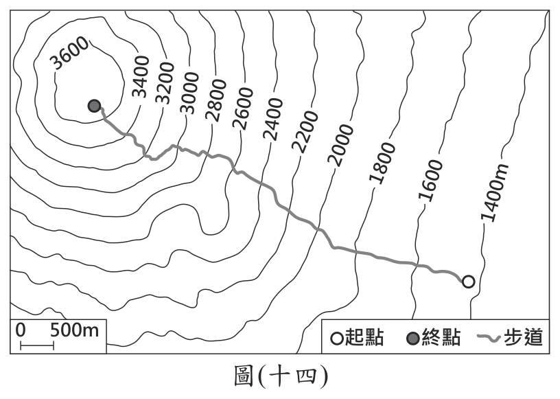
表(九)| 路線 項目 | 甲 | 乙 | 丙 | 丁 |
|---|
| 起點海拔高度(公尺) | 2,305 | 1,970 | 1,440 | 2,380 |
| 終點海拔高度(公尺) | 3,720 | 3,720 | 3,715 | 3,715 |
| 上山路線長度(公里) | 7.5 | 7.8 | 11.0 | 5.0 |
| 上山路線平均坡度(%) | 18.9 | 22.4 | 20.7 | 26.7 |
- （A）甲
- （B）乙
- （C）丙
- （D）丁
答案：（C）
詳解與考點
正解：本題要把圖（十四）路線呈現的起點海拔與路線長度等特徵，逐一比對表（九）中甲、乙、丙、丁四條路線的數據，找出最相符者。表（九）數據為：甲起點 2305 公尺、終點 3720 公尺、長 7.5 公里、坡度 18.9%；乙起點 1970 公尺、終點 3720 公尺、長 7.8 公里、坡度 22.4%；丙起點 1440 公尺、終點 3715 公尺、長 11.0 公里、坡度 20.7%；丁起點 2380 公尺、終點 3715 公尺、長 5.0 公里、坡度 26.7%。四者之中，丙的起點海拔最低、路線長度也最長，這正是丙區別於其他三條路線最明顯的特徵，與圖（十四）所示起點海拔偏低、爬升距離較長的路線相符，故 C 為正解。
A：甲起點 2305 公尺、長 7.5 公里，起點海拔明顯高於圖中路線所示，不符合。
B：乙起點 1970 公尺、長 7.8 公里，起點海拔雖較低但仍高於圖中所示，路線長度也較短，不符合。
D：丁起點 2380 公尺、長僅 5.0 公里，起點海拔最高且路線最短，與圖中路線特徵相反，不符合。
本題考點：等高線地形圖與坡度資料的比對判讀——須同時核對起點海拔、終點海拔與路線長度三項數據，缺一不可；不能只看單一數值就下判斷，須綜合多項特徵才能鎖定唯一符合的路線。
第 48 題
根據表(九)中資訊，小婷與體力、經驗較為不足的民眾，選擇的路線分別為下列何者？
表(九)| 路線 項目 | 甲 | 乙 | 丙 | 丁 |
|---|
| 起點海拔高度(公尺) | 2,305 | 1,970 | 1,440 | 2,380 |
| 終點海拔高度(公尺) | 3,720 | 3,720 | 3,715 | 3,715 |
| 上山路線長度(公里) | 7.5 | 7.8 | 11.0 | 5.0 |
| 上山路線平均坡度(%) | 18.9 | 22.4 | 20.7 | 26.7 |
- （A）小婷選甲；體力、經驗較為不足的民眾選丁
- （B）小婷選乙；體力、經驗較為不足的民眾選丙
- （C）小婷選丙；體力、經驗較為不足的民眾選乙
- （D）小婷選丁；體力、經驗較為不足的民眾選甲
答案：（D）
詳解與考點
正解：題幹要求依平均坡度選路線，應用公式「平均坡度（％）＝（終點高度－起點高度）÷路線長度×100」，並先把公里換成公尺。甲：(3,720-2,305)＝1,415公尺，1,415÷7,500×100=18.866…％，約 18.9％。乙：(3,720-1,970)＝1,750公尺，1,750÷7,800×100=22.435…％，約 22.4％。丙：(3,715-1,440)＝2,275公尺，2,275÷11,000×100=20.681…％，約 20.7％。丁：(3,715-2,380)＝1,335公尺，1,335÷5,000×100=26.7％。丁的 26.7％最高、最陡，小婷應選丁；甲的 18.9％最低、最緩，體力與經驗較不足者應選甲，故 D 為正解。
A：甲為最緩的 18.9％，不符合小婷要選最陡路線；丁為最陡的 26.7％，不適合題幹指定的較不足者，錯誤。
B：乙為 22.4％、丙為 20.7％，兩者都不是最高的丁或最低的甲；錯在只比較路線長度或單一海拔，未完整代入高差與長度，錯誤。
C：丙為 20.7％、乙為 22.4％，丙非最陡，乙亦非最緩，錯誤。它看起來對，是因為丙起終點高差 2,275公尺最大，但坡度還要除以 11,000公尺的路線長度。
本題考點：平均坡度計算——先求終點減起點的高差，再以相同單位除以路線長度並乘 100；比較判準——百分比最高為最陡、最低為最緩，不能只看高差、起點高度或路線長短。
第 49 題
根據上文及圖（十五）的資訊判斷，上述都市的氣候特色應為下列何者？
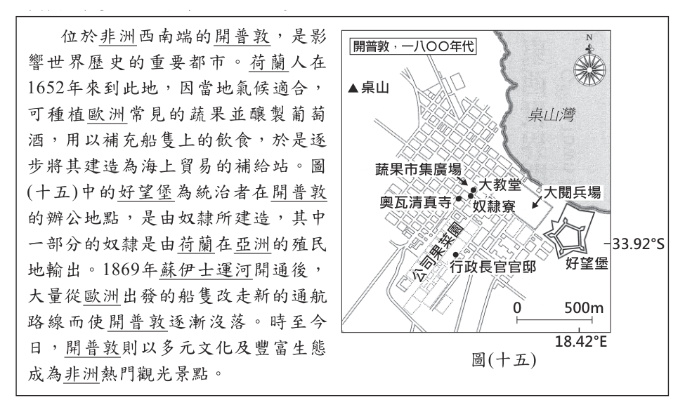
- （A）一月寒冷且年溫差大
- （B）一月溫暖且雨量較少
- （C）全年低溫且雨量稀少
- （D）終年有雨且夏雨較多
答案：（B）
詳解與考點
正解：題幹的開普敦位於非洲西南端、約南緯 34度，屬南半球地中海型氣候，特徵是夏乾冬雨。1月是南半球夏季，因此溫暖且雨量較少，故 B 為正解。
A：1月在南半球是夏季，不會是寒冷；地中海型氣候的年溫差也非此題重點，錯誤。
C：開普敦不屬全年低溫的高緯或高山氣候，也非全年雨量稀少的沙漠氣候，錯誤。
D：終年有雨且夏雨較多較接近其他降水型態，與開普敦夏乾冬雨不符，錯誤。它看起來對，是因為開普敦可種植蔬果與葡萄，但農業存在不表示全年多雨。
本題考點：南半球季節——1月為南半球夏季；地中海型氣候——夏季溫暖乾燥、冬季較涼多雨，判讀時要同時看緯度與大陸西岸位置。
第 50 題
文中提及奴隸的輸出地最可能包含下列何者？
- （A）南洋群島
- （B）朝鮮半島
- （C）伊比利半島
- （D）夏威夷群島
答案：（A）
詳解與考點
正解：題幹指奴隸由荷蘭在亞洲的殖民地輸出，應連結荷蘭海外殖民地分布。荷蘭在今印尼一帶建立荷屬東印度，位置包含南洋群島，因此 A 為正解。
B：朝鮮半島不是荷蘭在亞洲的主要殖民地，錯誤。
C：伊比利半島位於歐洲，且為西班牙、葡萄牙所在區域，不符荷蘭在亞洲的殖民地，錯誤。
D：夏威夷群島位於太平洋中部，非荷蘭在亞洲的主要殖民地，錯誤。
本題考點：荷蘭海外擴張——荷屬東印度以今印尼與南洋群島為核心；地理定位——先判斷選項是否在亞洲，再辨識是否屬荷蘭殖民勢力範圍。
第 51 題
文中提到船隻改走新的通航路線，是因此航路具備下列哪一優勢？
- （A）大幅縮短至印度洋周邊的航行路程
- （B）可避免通過滿布浮冰的大西洋海域
- （C）可藉由北大西洋暖流加快航行速度
- （D）有助於疏解前往南美洲擁擠的航路
答案：（A）
詳解與考點
正解：題幹提到 1869年蘇伊士運河開通後，歐洲船隻不必再繞行非洲南端的好望角；蘇伊士運河連通地中海與紅海，可大幅縮短前往印度洋周邊的航程，故 A 為正解。
B：新航路的優勢不在避開浮冰；蘇伊士運河附近也不是滿布浮冰的大西洋海域，錯誤。
C：北大西洋暖流與蘇伊士運河的通航功能無關，錯誤。
D：蘇伊士運河主要縮短歐洲往印度洋及亞洲的航程，不是為疏解前往南美洲的航路，錯誤。
本題考點：蘇伊士運河——連通地中海與紅海，使歐亞航線可免繞好望角；交通革新影響——航程縮短會改變補給站與港口的地位。
第 52 題
關於文中活動理念對臺灣帶來影響的過程，最適合以下列何者說明？
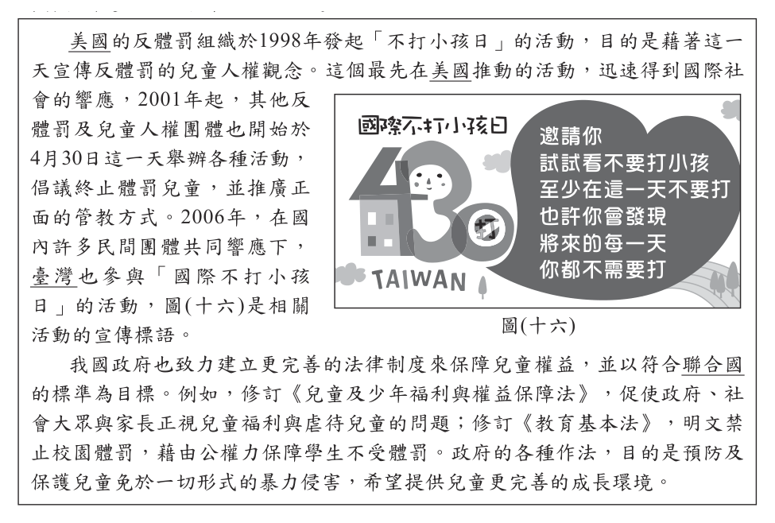
- （A）法律修改程序的變化
- （B）科技發展帶來的衝擊
- （C）風俗習慣的文化傳承
- （D）全球化下的文化交流
答案：（D）
詳解與考點
正解：題幹強調「最先在美國推動」後獲國際響應並傳入臺灣，這是理念跨國擴散所呈現的全球化文化交流。D 符合此過程，故為正解。
A：文中的法律修訂是理念傳入後的國內配套，不是在說法律修改程序如何改變，錯誤。
B：題幹重點是人權理念與活動跨國傳播，沒有指出科技發展造成衝擊，錯誤。
C：活動源於美國再傳入臺灣，屬跨文化交流，不是本地風俗代代相傳，錯誤。
本題考點：全球化下的文化交流——判斷理念、商品或生活方式是否跨越國界並產生相互影響；影響結果如國內修法，須和理念傳播的過程區分。
第 53 題
根據圖(十六)判斷，關於這則宣傳標語所呈現的意義，下列敘述何者最適當？
- （A）主張對實施體罰者提起訴訟加以處罰
- （B）藉由改變家長價值觀來帶動社會變遷
- （C）上街請願要求國家立法保障兒童福利
- （D）推廣法治教育教導兒童保護自身權益
答案：（B）
詳解與考點
正解：題幹的宣傳標語旨在倡議停止體罰、採取正面管教，關鍵是透過家長觀念的改變來影響兒童權益。B 說明由改變家長價值觀帶動社會變遷，符合標語意義，故為正解。
A：標語並非主張對實施體罰者提起訴訟處罰，而是訴求改變管教觀念，錯誤。
C：題幹沒有上街請願或要求立法的訊息，錯誤。
D：標語的對象主要是家長與社會大眾，不是教導兒童自我保護，錯誤。它看起來對，是因為同樣涉及兒童權益，但手段與對象不符。
本題考點：社會變遷的推動——民間團體可藉倡議、宣導改變價值觀；判斷時要分辨訴求觀念改變、法律制裁與制度改革等不同方式。
第 54 題
關於文末前、後所提及我國的二項法規，下列敘述何者最適當？
- （A）以法律位階而言，前者具有最高性
- （B）以法律位階而言，後者具有固定性
- （C）以修法程序而言，皆須經總統公布後才生效
- （D）以修法程序而言，皆可由行政機關自行修訂
答案：（C）
詳解與考點
正解：題幹前、後所列《兒童及少年福利與權益保障法》與《教育基本法》都是法律，關鍵是法律的修正與生效程序。法律經立法院三讀通過後，須由總統公布才生效，C 正確。
A：兩者都是一般法律，不具有最高的法律位階；憲法才具有最高性，錯誤。
B：法律可依程序修正或廢止，沒有固定不變的特性，錯誤。
D：法律不得由行政機關自行修訂，仍須經立法院審議通過，錯誤。
本題考點：法律位階與立法程序——憲法位階最高，法律位於其下；法律的制定或修正須經立法院議決，並由總統公布後生效。
其他年度
回到國中教育會考社會的年度總覽，
或到國中教育會考題庫首頁看其他科目。
題目與標準答案出自心測中心 會考歷屆試題（依著作權法 §9，考試試題不受著作權保護）。依中華民國《著作權法》第 9 條第 1 項第 5 款，
依法令舉行之各類考試試題不得為著作權之標的，得自由利用。詳解為 AI 整理的學習輔助，
並非官方標準答案；中華民國會修訂，引用前請對照現行版本查證。